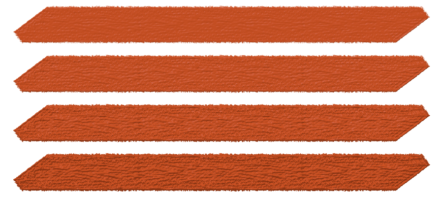
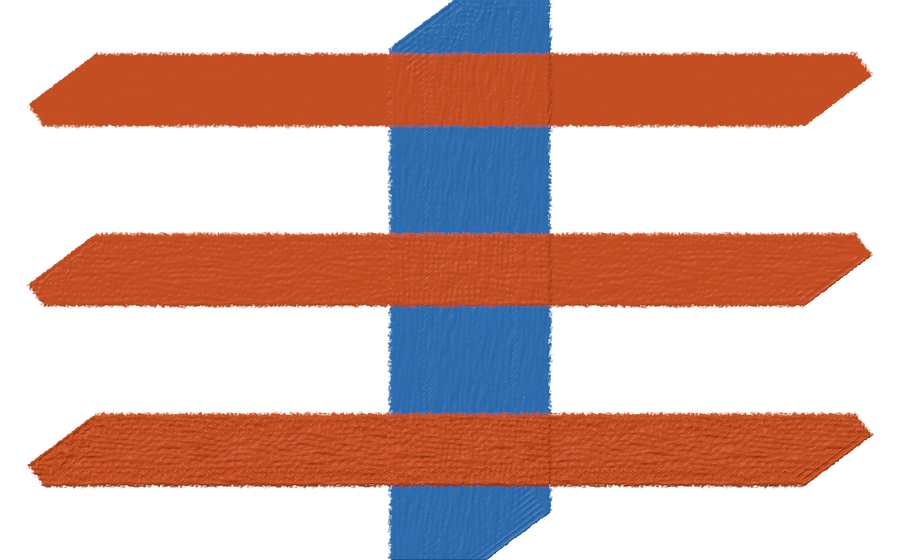
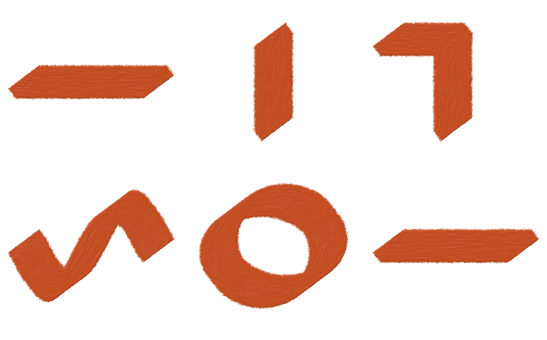

Sketchpad · material engine · September 13, 2026
Loaded paint.
Retained surface relief.
Implementation preview — not ready to ship. The full-canvas save still fails the constrained memory test. Remote testing is stopped while the remaining allocations are investigated. The images below show the implemented brush behavior.
The knife now deposits an opaque body and keeps its paint surface. Paper texture changes thickness instead of permanently excluding interior pixels. Separate contacts build on the retained surface. The shader keeps unlit pigment separate from its shaded appearance.
This is the first material-engine implementation: a loaded-deposit model with automatic replenishment. Wet mixing, finite blade loads, pickup and physical plowing remain future stages. The research and physical references describe the broader target.
The old gaps can be covered
The previous knife left 171 of 5,280 sampled interior pixels completely transparent after eight identical contacts. The new knife leaves zero in that same test. It reaches full interior coverage on the first loaded pass, and the material plane records additional thickness on subsequent contacts.

New measurement CSV · Previous measurement CSV. These are actual native GPU renders, not generated illustrations.
Paint load controls the relief
Select Knife, then adjust Load in the brush library. On wide desktop layouts, Load also appears beside Size and Opacity. Low load gives a thinner surface; high load builds stronger relief. Paint stays replenished throughout the contact.

Load and opacity have different jobs. Load controls deposited thickness. Opacity blends the color and material transaction with the previous state. A lightly loaded opaque stroke can therefore remain opaque while making less relief. The load value is fixed when the contact starts, just like its shader and other brush settings.
Lighting uses the surface slope, including neighboring logical tiles. Diffuse shading and restrained highlights reveal relief without punching holes through the paint. Unlit pigment is stored separately, so later engine work does not have to mistake a highlight for white pigment.
Motion and the held blade remain separate

The current contact is still the existing swept blade shape. A flexible blade underside, richer tip/edge transitions, filtered heading retention and calibrated tablet controls remain part of the next contact-model stage. The orientation study records those distinctions and edge cases.
Material travels with the drawing
Each drawing layer can own a sparse companion material plane. It never appears as an extra drawing layer or contributes directly to compositing. A material stroke snapshots and commits its visible color and material data in one undo transaction. Canceling a live contact leaves neither behind.
Native files retain both planes; old files open as flat surfaces. Duplicating a layer copies its material too, and deleting or reordering a layer preserves the relationship through undo. PNG export records the visible appearance. It does not carry editable paint depth.
Ordinary brushes have an explicit compatibility rule: their paint and eraser coverage flatten the affected material proportionally. This prevents erased or covered relief from resurfacing later. It is a practical mixed-media rule for this version, not a simulation of applying every real medium over wet oil.
| Checked behavior | What the test verifies |
|---|---|
| Loaded overlap | Opaque interiors and increasing retained thickness across separate contacts. |
| Live preview | Earlier pixels survive a broad 512-pixel contact; sampled preview pixels match committed pixels exactly. |
| History | Undo/redo restores both planes, including ordinary painting and erasing over relief. |
| Native files | Exact material restoration, followed by the same next-stroke result after reload. |
| Layer operations | Duplicate, delete, reorder and undo preserve material without adding UI layers. |
| Large transactions | A loaded stroke across a 4096-pixel document survives lift, save, undo, redo and a follow-up edit. |
Validation results and machine-specific limits are recorded in the repository's material-engine notes. The native integration tests include Atlas and Apollo. This page does not claim a performance improvement over the coverage-only engine.
A foundation for fuller simulation
The new shader contract returns coverage and thickness. The engine owns surface state, lighting, resource boundaries and history. This keeps programmable brush authoring while providing a place to add ordered material interaction.
The current model takes a maximum deposition envelope within one contact and adds it to the previous surface between contacts. Height is bounded at 64 document-pixel units, and the material plane retains one unlit pigment value per cell. It has no physical unit calibration, finite reservoir, wet pigment strata or mass-conserving transport. Those limitations are explicit in the design notes.
The next stages are a spatial blade reservoir, calibrated contact, pickup and plowing, followed by bounded wet pigment depth and drying. A fuller viscous or volumetric solver remains an option if it produces artist-visible benefits beyond a local height-surface model. It would require conservation tests, physical reference samples and separate performance budgets for contact and settling.
Implementation notes and simulation roadmap · Shader authoring contracts · Research and physical references · Atlas gallery